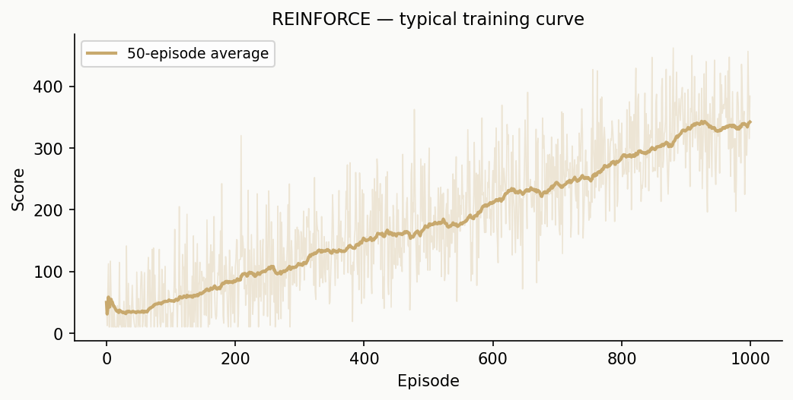
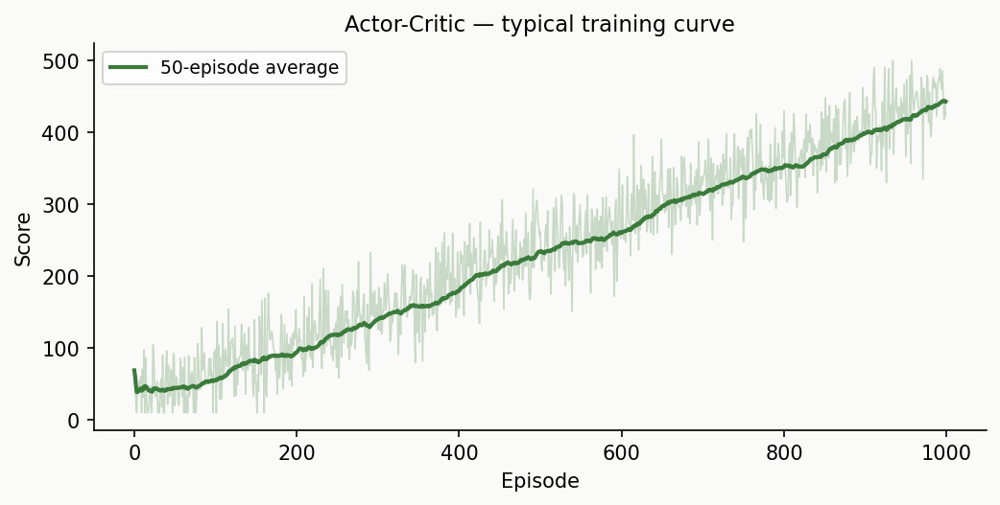

You won't read about RL — you'll play a game, get frustrated, build strategies, and accidentally invent every major RL algorithm along the way.
Forget theory. We're going to play a game. The game is called CartPole — there's a cart on a track with a pole balanced on top. You can push the cart left or right. The goal: keep the pole from falling over as long as possible.
The twist? You play using Python code.
The CartPole environment: keep the pole balanced by pushing the cart left or right.
This chapter uses the gymnasium library (the game engine). Install it before
starting:
# In a notebook cell or your terminal:
!pip install gymnasium
On a local VS Code setup, run pip install gymnasium in your terminal.
First, create a CartPole game. Run env.reset() — it gives you back 4 numbers. Print them. What do you think they mean?
import gymnasium as gym
import numpy as np
env = gym.make("CartPole-v1")
obs, info = env.reset(seed=42)
print("Observation:", obs)
print("Number of values:", len(obs))
You should see 4 numbers. They describe the current state of the cart and pole — position, speed, angle, and how fast the angle is changing.
The 4 numbers are:
obs[0]: cart position (negative = left, positive = right)obs[1]: cart velocityobs[2]: pole angle (negative = tilting left, positive = tilting right)obs[3]: pole angular velocity (how fast the angle is changing)The 4 numbers describe the world:
| Index | What it is | Meaning |
|---|---|---|
obs[0] |
Cart position | Where the cart is on the track |
obs[1] |
Cart velocity | How fast the cart is moving |
obs[2] |
Pole angle | Which way the pole is leaning |
obs[3] |
Angular velocity | How fast the pole is falling |
You have two possible actions: 0 = push left, 1 = push right.
Call env.step(action) with action 0 (push left) or 1 (push right). It returns 5 things. Print them all and figure out what each one means.
obs, info = env.reset(seed=42)
result = env.step(1) # push right
print("Result has", len(result), "items:")
for i, item in enumerate(result):
print(f" [{i}]: {item}")
The 5 return values are: (new_observation, reward, terminated, truncated, info). The reward is 1.0 for every step you survive. The game ends when terminated or truncated becomes True.
obs, info = env.reset(seed=42)
new_obs, reward, terminated, truncated, info = env.step(1)
print(f"New observation: {new_obs}")
print(f"Reward: {reward}") # 1.0 — you survived one more step!
print(f"Terminated: {terminated}") # False — pole hasn't fallen yet
print(f"Truncated: {truncated}") # False — haven't hit 500 steps
Write a loop that keeps taking random actions (0 or 1) until the game ends (terminated or truncated). Count how many steps you survived — that's your score. Run it a few times. What scores do you get?
Use np.random.choice([0, 1]) to pick a random action each step.
obs, info = env.reset()
total_reward = 0
done = False
while not done:
action = np.random.choice([0, 1])
obs, reward, terminated, truncated, info = env.step(action)
total_reward += reward
done = terminated or truncated
print(f"Score: {total_reward}")
scores = []
for game in range(10):
obs, info = env.reset()
total_reward = 0
done = False
while not done:
action = np.random.choice([0, 1])
obs, reward, terminated, truncated, info = env.step(action)
total_reward += reward
done = terminated or truncated
scores.append(total_reward)
print(f"Game {game+1}: score = {total_reward}")
print(f"\nAverage score: {np.mean(scores):.1f}")
Before writing any strategy, just think:
The pole is tilting to the RIGHT. Should you push the cart left or right to keep it balanced?
The pole is tilting to the LEFT. Which way should you push?
The pole is nearly vertical but moving (rotating) fast to the right. What should you do?
Think about balancing a broomstick on your palm. If it tilts right, you move your hand RIGHT — under the falling point. Same idea here.
If the pole tilts right, push right — move the cart under the pole. If it tilts left, push left. If it's moving fast, you need to act in the direction it's falling. This is the core intuition behind a good policy.
Random actions give terrible scores. You already have intuition about what to do — let's turn it into code.
In Exercise 1.3 you wrote a game loop. You'll be testing many different strategies in this chapter, so let's turn that loop into a reusable function.
Write play_game(policy_fn, env) that plays one full episode using policy_fn
(a function that takes an observation and returns an action) and returns the total
reward.
Then write evaluate(policy_fn, env, n=100) that plays n games and returns the
average score.
Test them with a random policy: evaluate(lambda obs: np.random.choice([0, 1]), env).
play_game is your loop from Exercise 1.3, but instead of np.random.choice,
call policy_fn(obs) to pick the action:
def play_game(policy_fn, env):
obs, info = env.reset()
total_reward = 0
done = False
while not done:
action = policy_fn(obs)
obs, reward, terminated, truncated, info = env.step(action)
total_reward += reward
done = terminated or truncated
return total_reward
evaluate just calls play_game in a loop: np.mean([play_game(policy_fn, env) for _ in range(n)])
def play_game(policy_fn, env):
obs, info = env.reset()
total_reward = 0
done = False
while not done:
action = policy_fn(obs)
obs, reward, terminated, truncated, info = env.step(action)
total_reward += reward
done = terminated or truncated
return total_reward
def evaluate(policy_fn, env, n=100):
scores = [play_game(policy_fn, env) for _ in range(n)]
return np.mean(scores)
print(f"Random policy: {evaluate(lambda obs: np.random.choice([0, 1]), env):.1f}")
Write a function my_policy(obs) that takes the 4 observation numbers and returns 0 (left) or 1 (right).
Use your intuition from the previous exercise: if the pole is tilting right (positive angle = obs[2] > 0), push right (return 1). Otherwise push left.
Evaluate it over 100 episodes. How much better is it than random?
It's as simple as: return 1 if obs[2] > 0 else 0. The angle is obs[2].
def my_policy(obs):
return 1 if obs[2] > 0 else 0
avg = evaluate(my_policy, env)
print(f"Average score: {avg:.1f}")
# Typically 40-60 — much better than random (~20), but still not great
Your angle-only policy probably scores around 40–60. Can you do better?
Try using the angular velocity (obs[3]) too. If the pole is tilting right AND the angular velocity is positive (falling faster to the right), it's more urgent to push right. Experiment with different rules. Can you consistently score above 200?
Try: return 1 if obs[2] + obs[3] > 0 else 0. Adding the angular velocity helps you anticipate where the pole is GOING, not just where it IS.
Try giving angular velocity more weight: return 1 if obs[2] + 0.5 * obs[3] > 0 else 0. Or less: return 1 if obs[2] + 2 * obs[3] > 0 else 0. Which ratio works best?
def better_policy(obs):
return 1 if obs[2] + 0.5 * obs[3] > 0 else 0
avg = evaluate(better_policy, env)
print(f"Average score: {avg:.1f}")
# Typically 60-200+ depending on the exact weights
Optional stretch — skip this if you want to move on. You won't miss anything later.
Figure out all possible ways you can write the policy function to maximize the score. Try at least 3 different heuristics and record their average scores.
Some ideas to explore:
What's the highest average score you can achieve by hand-tuning?
Using all 4 observations with the right multipliers can get you close to 500 (the maximum). But finding those multipliers by hand is tedious...
Typical scores: angle only ~40–60, angle + angular velocity ~60–200, all 4 observations ~200–500 (depending on the multipliers you chose). If you got above 200, you're doing great. Notice how tedious the hand-tuning is — that's the motivation for automating the search.
# Heuristic 1: angle only
h1 = lambda obs: 1 if obs[2] > 0 else 0
# Heuristic 2: angle + angular velocity
h2 = lambda obs: 1 if obs[2] + 0.5 * obs[3] > 0 else 0
# Heuristic 3: all 4 observations
h3 = lambda obs: 1 if 0.1*obs[0] + 0.5*obs[1] + 1.0*obs[2] + 0.5*obs[3] > 0 else 0
for name, h in [("angle only", h1), ("angle+velocity", h2), ("all 4", h3)]:
print(f"{name}: avg = {evaluate(h, env):.1f}")
You just played a game, wrote a strategy function, tested it, tweaked it, and repeated. Before we go further, give each piece a short name:
The game itself (CartPole) — what would you call the 'world' the player interacts with?
The 4 numbers you receive each step — what are they?
Push left / push right — what is this?
The number of steps survived (your score) — what is this?
Your function (my_policy) — what would you call it?
The process of playing → seeing the score → tweaking your function → replaying — what is this?
Think in general terms. The game is the 'world' or 'environment.' The numbers describe the current 'state.' Push left/right is a 'choice' or 'action.' The score is your 'reward.' Your function is your 'strategy.' And the whole loop of try → learn → improve is... learning from experience.
There's no single right answer. Most people arrive at something like: "the world," "the state," "an action," "the reward," "a strategy," and "learning by trial and error." The standard terms are below.
Here are the names computer scientists settled on:
| What you experienced | What it's called |
|---|---|
| The game (CartPole) | Environment |
| The 4 numbers you see each step | Observations (or state) |
| Push left / push right | Actions |
| Number of steps survived | Reward |
Your function (my_policy) |
A policy |
| Play game → see result → tweak policy → repeat | Reinforcement Learning |
This is the closest thing to how humans learn. You don't get a textbook — you try stuff, get feedback, and adapt. A child learning to walk, a dog learning tricks, you learning to drive — all reinforcement learning. That's life!
Map the RL terms to a real-life example: a child learning to ride a bicycle.
What is the environment?
What are the observations (state)?
What are the actions?
What are the rewards and penalties?
What is the policy?
Environment = the physical world (road, bicycle, gravity). Observations = what the child sees and feels (balance, speed, slope). Actions = turn handlebars, pedal, lean. Rewards = staying upright, moving forward. Penalties = falling, crashing.
Look at your best heuristic from Part 2. It probably looked something like: "if angle > 0, go right" or "if angle + 0.5 × angular_velocity > 0, go right." That's really just: multiply each observation by some number, add them up, and check the sign. Your action is a function of the observations.
A note about lambda in loops. In the exercises ahead, you'll see code like:
policy = lambda obs, w1=w1, w2=w2: two_weight_policy(obs, w1, w2)
The w1=w1, w2=w2 part is important. Without it, all the lambdas in a loop would
share the same variables and use whatever value they have at the end of the loop
— not the value when the lambda was created. The w1=w1 trick captures the current
value. This is a common Python gotcha with closures; you'll see it in several
exercises from here on.
Write a policy that computes score = w1 * obs[2] + w2 * obs[3] (angle and angular velocity). If score > 0, go right. Otherwise go left.
Try these weight combinations and record the average score for each:
def two_weight_policy(obs, w1, w2):
return 1 if w1 * obs[2] + w2 * obs[3] > 0 else 0
for w1, w2 in [(1,0), (1,1), (1,0.5), (0.5,1)]:
policy = lambda obs, w1=w1, w2=w2: two_weight_policy(obs, w1, w2)
print(f"w1={w1}, w2={w2}: avg score = {evaluate(policy, env):.1f}")
def two_weight_policy(obs, w1, w2):
return 1 if w1 * obs[2] + w2 * obs[3] > 0 else 0
for w1, w2 in [(1,0), (1,1), (1,0.5), (0.5,1)]:
policy = lambda obs, w1=w1, w2=w2: two_weight_policy(obs, w1, w2)
print(f"w1={w1}, w2={w2}: avg score = {evaluate(policy, env):.1f}")
Now use ALL 4 observations. Write weighted_policy(obs, weights) that computes:
weights[0]*obs[0] + weights[1]*obs[1] + weights[2]*obs[2] + weights[3]*obs[3]
Go right if positive, left otherwise. This is a dot product — np.dot(weights, obs) in numpy.
Try weights = [0, 0, 1, 0.5] (ignoring cart position and velocity). Then try [0.1, 0.5, 1, 0.5].
np.dot(weights, obs) or sum(w*o for w,o in zip(weights, obs)) both work.
def weighted_policy(obs, weights):
return 1 if np.dot(weights, obs) > 0 else 0
for w in [[0, 0, 1, 0.5], [0.1, 0.5, 1, 0.5]]:
policy = lambda obs, w=w: weighted_policy(obs, np.array(w))
print(f"weights={w}: avg score = {evaluate(policy, env):.1f}")
The numbers you've been manually tuning — w1, w2, w3, w4 — are called policy parameters. The function that maps observations to actions is the policy. The entire goal of reinforcement learning just became a concrete optimization problem:
Find the weights (policy parameters) that maximize the average reward.
But how? Trying them by hand is tedious. We need a strategy.
You need 4 good numbers. How hard can it be?
One idea: try ALL possible combinations of the 4 weights.
Each weight is a real number (like 0.37 or -1.2). How many possible values does a single weight have?
If you discretized each weight to 100 values (from -1 to 1 in steps of 0.02), how many combinations of 4 weights would you need to try?
Why is this approach impractical?
100 × 100 × 100 × 100 = 100 million combinations. And each one requires playing multiple games to get a reliable score. That would take days.
Each weight is continuous — infinitely many values. Even discretized to 100 values each, you'd have 100^4 = 100,000,000 combinations. At 5 games per evaluation, that's 500 million games. Brute force doesn't scale.
Think for a minute. What strategies can YOU think of for finding 4 good weight values without trying every combination? Write down at least 2 ideas before looking at hints.
Strategy 1?
Strategy 2?
One approach: try a bunch of random weights and keep the best one. Another: start with some weights and make small adjustments to improve them.
Yet another: take the best weights you found, make random variations of them, keep the best variations, repeat. Sound like anything from biology?
Generate 100 random weight vectors (each weight between -1 and 1). Evaluate each one over 5 episodes. Print the best weights and their score.
np.random.uniform(-1, 1, size=4) generates one random weight vector.
best_score = 0
best_weights = None
for i in range(100):
weights = np.random.uniform(-1, 1, size=4)
policy = lambda obs, w=weights: weighted_policy(obs, w)
score = evaluate(policy, env, n=5)
if score > best_score:
best_score = score
best_weights = weights
best_score = 0
best_weights = None
for i in range(100):
weights = np.random.uniform(-1, 1, size=4)
policy = lambda obs, w=weights: weighted_policy(obs, w)
score = evaluate(policy, env, n=5)
if score > best_score:
best_score = score
best_weights = weights.copy()
print(f"Best score: {best_score:.1f}")
print(f"Best weights: {best_weights}")
# Verify with more episodes
policy = lambda obs, w=best_weights: weighted_policy(obs, w)
print(f"Verified over 100 episodes: {evaluate(policy, env, n=100):.1f}")
Random search found a decent solution, but can we do better? Here's an idea:
Now you have 20 good weight vectors. But you need 100 for the next round. How would you get from 20 back to 100? And then what? Design the rest of this algorithm yourself, implement it, and run it for 10 generations. Print the best score each generation.
Think about it: each of the 20 survivors is a good set of weights. What if you made slightly different copies of each one — like variations on a theme? How many copies per survivor do you need to get back to 100?
Create 4 'children' from each of the 20 by adding small random noise: child = parent + np.random.uniform(-0.1, 0.1, size=4). That gives 80 children + 20 parents = 100. Then repeat: evaluate → keep top 20 → breed → repeat.
population = [np.random.uniform(-1, 1, size=4) for _ in range(100)]
for gen in range(10):
scored = []
for weights in population:
policy = lambda obs, w=weights: weighted_policy(obs, w)
score = evaluate(policy, env, n=5)
scored.append((score, weights))
scored.sort(key=lambda x: -x[0])
top_20 = [w for _, w in scored[:20]]
print(f"Gen {gen+1}: best = {scored[0][0]:.1f}")
population = list(top_20)
for parent in top_20:
for _ in range(4):
child = parent + np.random.uniform(-0.1, 0.1, size=4)
population.append(child)
population = [np.random.uniform(-1, 1, size=4) for _ in range(100)]
for gen in range(10):
scored = []
for weights in population:
policy = lambda obs, w=weights: weighted_policy(obs, w)
score = evaluate(policy, env, n=5)
scored.append((score, weights))
scored.sort(key=lambda x: -x[0])
top_20 = [w.copy() for _, w in scored[:20]]
print(f"Gen {gen+1}: best = {scored[0][0]:.1f}, avg top-20 = {np.mean([s for s,_ in scored[:20]]):.1f}")
population = list(top_20)
for parent in top_20:
for _ in range(4):
child = parent + np.random.uniform(-0.1, 0.1, size=4)
population.append(child)
# Final best
best_weights = top_20[0]
policy = lambda obs, w=best_weights: weighted_policy(obs, w)
print(f"\nFinal best weights: {best_weights}")
print(f"Verified over 100 episodes: {evaluate(policy, env, n=100):.1f}")
What you just invented is called a Genetic Algorithm. See the analogy?
| Your code | Biology |
|---|---|
| Weight vector | DNA |
| Score | Fitness |
| Top 20 survive | Natural selection |
| Adding noise to create children | Mutation |
| Repeat for generations | Evolution |
You found good policy parameters without any calculus — just random variation and selection. Evolution works!
Optional stretch — skip this if you want to move on. You won't miss anything later.
Can you think of ways to make the genetic algorithm better? Try implementing any of these ideas:
Try your ideas and see if they beat the basic version! If you invent something new, we want to hear about it.
For crossover: child = np.where(np.random.random(4) > 0.5, parent_a, parent_b)
Genetic algorithms work but feel brute-force. You might remember a more targeted approach: compute the gradient, move in the direction that improves the objective. Can we do that here?
Here's the idea: for each weight, nudge it slightly (+0.01), play a few games, nudge it the other way (-0.01), play again. The difference in scores tells you which direction improves that weight.
This is called finite differences — estimating the gradient by measuring the effect of small changes.
Take your best weights from the genetic algorithm (or start with
[0, 0, 1, 0.5]). Estimate the gradient and update for 20 steps. Does the
score improve?
For each weight $i$: add epsilon, evaluate, subtract epsilon, evaluate. The gradient
for that weight $\approx$ (score_plus - score_minus) / (2 × epsilon). Then update:
weights += learning_rate * gradient.
weights = np.array([0.0, 0.0, 1.0, 0.5])
lr = 0.01
eps = 0.01
for step in range(20):
gradient = np.zeros(4)
for i in range(4):
w_plus = weights.copy()
w_plus[i] += eps
w_minus = weights.copy()
w_minus[i] -= eps
score_plus = evaluate(lambda obs, w=w_plus: weighted_policy(obs, w), env, n=10)
score_minus = evaluate(lambda obs, w=w_minus: weighted_policy(obs, w), env, n=10)
gradient[i] = (score_plus - score_minus) / (2 * eps)
weights += lr * gradient
if (step + 1) % 5 == 0:
score = evaluate(lambda obs, w=weights: weighted_policy(obs, w), env, n=10)
print(f"Step {step+1}: score = {score:.1f}")
weights = np.array([0.0, 0.0, 1.0, 0.5])
lr = 0.01
eps = 0.01
for step in range(20):
gradient = np.zeros(4)
for i in range(4):
w_plus = weights.copy()
w_plus[i] += eps
w_minus = weights.copy()
w_minus[i] -= eps
score_plus = evaluate(lambda obs, w=w_plus: weighted_policy(obs, w), env, n=10)
score_minus = evaluate(lambda obs, w=w_minus: weighted_policy(obs, w), env, n=10)
gradient[i] = (score_plus - score_minus) / (2 * eps)
weights += lr * gradient
if (step + 1) % 5 == 0:
score = evaluate(lambda obs, w=weights: weighted_policy(obs, w), env, n=10)
print(f"Step {step+1}: score = {score:.1f}, weights = {weights}")
Before moving on, make sure you understand what you just computed. Look at the gradient from one of your steps.
The gradient is a vector of 4 numbers — one per weight. If gradient[2] is large and positive, what does that tell you about weight 2?
If gradient[0] is close to zero, what does that mean?
In plain English, what is the gradient telling you? (No calculus needed — think about what you measured.)
gradient[2] large and positive means: increasing weight 2 would increase the score. gradient[0] near zero means: weight 0 barely affects the score right now. The gradient is a compass — it points in the direction that would improve the score the most.
The gradient tells you which direction to push each weight to improve the score. Large positive = increase this weight. Large negative = decrease it. Near zero = this weight doesn't matter much right now. It's a compass pointing toward better parameters.
The gradient approach probably gave erratic results — the score jumps around instead of steadily improving. Why?
If you play 10 games with the EXACT same weights, do you always get the same score? Why not?
If the score varies by ±30 between runs, and you're trying to detect a difference of 0.01 in one weight, can you reliably measure the gradient?
The game has randomness (different starting states). Your 'gradient' is the difference between two noisy measurements — it's almost pure noise.
The game is stochastic — the same weights give different scores each run. When you change a weight by 0.01, the score difference is swamped by random noise. Your "gradient" is mostly measuring randomness, not the true effect of the weight change.
So the noise kills the gradient signal. But there's an even deeper problem.
When you push right at step 5, was it the right move? You won't know until the game ends — maybe at step 200. The total score doesn't tell you WHICH of your 200 individual actions were good and which were bad. This is called the credit assignment problem: how do you assign credit (or blame) to each action?
Let's tackle this problem step by step.
You played a game and scored 150 steps. At step 100, you pushed right.
Was pushing right at step 100 a good action? How would you know?
Which reward is more relevant to the action at step 100 — the reward at step 101 or the reward at step 150?
If you got a reward of 1 at each step, how would you assign 'credit' to the action at step 100? Should nearby rewards count more than distant ones?
The reward at step 101 is directly influenced by what you did at step 100. The reward at step 150 is influenced by 50 other actions in between. Nearby rewards should count more.
The action at step 100 most directly affects step 101. Each subsequent step is influenced by many intervening actions. So nearby rewards should count more, and distant rewards should be discounted.
You agreed that nearby rewards should count more than distant ones. Now design a formula.
Suppose you played 5 steps and got rewards [1, 1, 1, 1, 1]. You want to compute a "total credit" for the action at step 0.
If you just sum all future rewards equally, what's the credit for step 0? (1+1+1+1+1 = 5). What's the problem with this?
What if each future reward was worth a little LESS than the one before it — say 99% as much? Step 0's own reward counts fully (×1), step 1's reward counts ×0.99, step 2's counts ×0.99², etc. What would the credit for step 0 be?
What should the credit for the LAST step (step 4) be? It has no future rewards.
What would you call that 0.99 multiplier?
With the 0.99 multiplier: credit for step 0 = 1 + 0.99×1 + 0.99²×1 + 0.99³×1 + 0.99⁴×1 ≈ 4.90. Credit for step 4 = just 1 (no future). The 0.99 is a 'discount factor' — it makes distant rewards fade away.
Credit for step t = reward[t] + 0.99 × reward[t+1] + 0.99² × reward[t+2] + ...
This is called the discounted return. The multiplier (0.99) is called the discount factor (gamma). It controls how much you care about distant vs. nearby rewards.
Write compute_discounted_rewards(rewards, gamma=0.99) that implements the credit system you just designed. It takes a list of rewards (one per step) and returns the discounted return for each step.
test_rewards = [1, 1, 1, 1, 1]
result = compute_discounted_rewards(test_rewards, gamma=0.99)
print("Discounted rewards:", result)
# Step 0 should be ~4.90, step 4 should be 1.0
Think about it from the end. The last step's credit is just its own reward. The second-to-last step's credit is its reward + gamma × (last step's credit). Can you see a pattern working backwards?
Start from the last step and work backwards: running = 0. For each step t from the end: running = rewards[t] + gamma * running. Store running as that step's credit.
def compute_discounted_rewards(rewards, gamma=0.99):
discounted = [0] * len(rewards)
running = 0
for t in reversed(range(len(rewards))):
running = rewards[t] + gamma * running
discounted[t] = running
return discounted
def compute_discounted_rewards(rewards, gamma=0.99):
discounted = [0.0] * len(rewards)
running = 0.0
for t in reversed(range(len(rewards))):
running = rewards[t] + gamma * running
discounted[t] = running
return discounted
Play a game, compute discounted rewards, and look at the values. Run the code below. What do you notice about the numbers — are any of them negative?
# Play one game with your best policy
obs, info = env.reset()
rewards = []
done = False
while not done:
action = 1 if obs[2] > 0 else 0
obs, reward, terminated, truncated, info = env.step(action)
rewards.append(reward)
done = terminated or truncated
disc = compute_discounted_rewards(rewards)
print(f"Game lasted {len(rewards)} steps")
print(f"First step's credit: {disc[0]:.1f}")
print(f"Last step's credit: {disc[-1]:.1f}")
print(f"Range: {min(disc):.1f} to {max(disc):.1f}")
All values are positive (ranging from 1 to ~50+). The first step's credit is large because it includes all future rewards. The last step is just 1.0. If everything is positive, the model thinks every action was good — that's not useful.
Every value is positive. The model can't tell which actions were good and which were bad — they all look "good." We need to fix that.
All the credits are positive, so every action looks good. But some were clearly better than others.
How would you fix this so that above-average actions get POSITIVE credit and below-average actions get NEGATIVE credit? Write a function that does this and apply it to the discounted rewards.
If the average credit is 30, and action A got credit 45 while action B got credit 15: subtract the average. A becomes +15 (above average = good!), B becomes -15 (below average = bad).
Try it: centered = np.array(disc) - np.mean(disc). Now play two games of DIFFERENT lengths. Compare the centered values — is the scale consistent between games?
The scale varies because longer games have higher discounted returns. Dividing by the standard deviation puts everything on the same scale: (values - mean) / std. Add a tiny 1e-8 to std to prevent division by zero. Call this function normalize.
After normalization, roughly half the actions have positive credit (better than average) and half have negative (worse than average). Now the model has a clear signal: reinforce the positive ones, suppress the negative ones.
def normalize(values):
values = np.array(values)
return (values - np.mean(values)) / (np.std(values) + 1e-8)
norm_disc = normalize(disc)
print(f"Before: all positive, range {min(disc):.1f} to {max(disc):.1f}")
print(f"After: range {min(norm_disc):.2f} to {max(norm_disc):.2f}")
print(f"Positive (above avg): {sum(1 for x in norm_disc if x > 0)}")
print(f"Negative (below avg): {sum(1 for x in norm_disc if x < 0)}")
So far you've been hand-tuning weights or using evolution. But there's something unsatisfying — you're searching OUTSIDE the game. You try weights, play a full game, check the score, try new weights. What if the model could learn FROM each game it plays?
New vocabulary ahead. Parts 7–9 introduce several new terms (REINFORCE, value function, TD error, advantage, actor, critic). Each is defined inline when it first appears. If you ever need a quick refresher, open the Glossary panel (top of the page) — it has one-line definitions of every term in this chapter.
Your current policy is deterministic: if weights @ obs > 0, always go right. Always. Every single time.
If the policy always makes the same decision in the same state, can it ever discover that the OTHER action might have been better?
What if instead of 'always go right when score > 0', the model said 'go right with 70% probability'? Sometimes it would go left — accidentally. What could you learn from those accidents?
If an accidental action leads to a HIGHER reward than usual, what should the model do next time?
A deterministic policy can't explore — it always does the same thing. A probabilistic policy sometimes tries the 'wrong' action. If that accident works out well, the model should increase the probability of that action. If it works out badly, decrease it. The randomness IS the learning signal.
A deterministic policy is stuck — it can't discover better actions. A probabilistic policy explores by sometimes taking random actions. When an accident leads to high reward, increase its probability. When it leads to low reward, decrease it. Exploration drives learning.
You want to convert your weighted_policy from a hard yes/no decision into a
probability. Instead of "go right if weights @ obs > 0", output a PROBABILITY
of going right — a number between 0 and 1.
Your current policy computes z = weights @ obs, which can be any number
(positive, negative, large, small). You need a function that takes z and
outputs a value between 0 and 1.
When z is large and positive (strong signal for 'right'), the probability should be close to what?
When z is large and negative (strong signal for 'left'), the probability should be close to what?
When z = 0 (no signal either way), the probability should be what?
Can you think of a formula that maps any number to the range (0, 1) with these properties? Hint: think about what happens to $\frac{1}{1 + \text{something}}$ when that 'something' is very large vs. very small.
You need: big z → near 1, small z → near 0, z=0 → 0.5. Consider $\frac{1}{1 + e^{-z}}$. When z is large positive, $e^{-z} \approx 0$, so the result is $\frac{1}{1+0} = 1$. When z is large negative, $e^{-z}$ is huge, so the result approaches 0. When z=0, $e^0 = 1$, so the result is $\frac{1}{2} = 0.5$.
The function $\sigma(z) = \frac{1}{1 + e^{-z}}$ does exactly what we need. It's called the sigmoid function. Large positive z → near 1, large negative z → near 0, z = 0 → exactly 0.5. It smoothly maps any real number into (0, 1) — a perfect probability.
Now use the sigmoid to build a probabilistic policy. Write:
prob_right(obs, weights) — returns sigmoid(weights @ obs)sample_action(obs, weights) — samples an action from the probabilityTest with weights = np.zeros(4). What probability do you get? Why?
def sigmoid(z):
z = np.clip(z, -500, 500)
return 1.0 / (1.0 + np.exp(-z))
sigmoid(np.dot(weights, obs)) gives a probability between 0 and 1. With all-zero weights, the dot product is 0, so sigmoid gives 0.5 — a coin flip.
To sample an action from the probability: generate a random number between 0 and 1. If it's less than the probability, go right (1). Otherwise go left (0).
weights = np.zeros(4)
def prob_right(obs, weights):
return sigmoid(np.dot(weights, obs))
def sample_action(obs, weights):
p = prob_right(obs, weights)
return 1 if np.random.random() < p else 0
# Test
obs, _ = env.reset()
p = prob_right(obs, weights)
print(f"Probability of going right: {p:.3f}")
print(f"Sampled action: {sample_action(obs, weights)}")
Your model outputs a probability and samples an action. After the game, you have discounted rewards telling you which actions were good (positive) and which were bad (negative).
If action = 'go right' and the discounted reward was POSITIVE (good action), should the model make 'go right' MORE or LESS likely next time?
If action = 'go right' and the discounted reward was NEGATIVE (bad action), what should happen?
You want to INCREASE reward. If you had a gradient (the direction that increases probability of the chosen action), what should you do — move WITH the gradient or AGAINST it?
To compute a gradient, you need a single number that measures how likely the chosen action was. The probability $p$ does that. But across many steps, probabilities multiply ($p_1 \times p_2 \times ...$), which is awkward for optimization. What mathematical function turns products into sums?
Good action → make it more likely (increase probability). Bad action → make it less likely (decrease probability). To increase reward, move WITH the gradient (gradient ASCENT instead of gradient descent).
The function is log! $\log(a \times b) = \log(a) + \log(b)$. So instead of working with the probability $p$ directly, we'll work with $\log(p)$ — it turns the messy product into a clean sum, and it's smooth and easy to differentiate.
Good actions → increase their probability. Bad actions → decrease their probability. Use gradient ASCENT (move with the gradient) instead of gradient descent (move against it). Multiply the gradient by the reward: positive reward amplifies, negative reward reverses.
Use $\log(p)$ instead of $p$ — the log turns products into sums, making the math cleaner across many steps.
Why $\log(p)$ and not just $p$? Quick recap before we dive into gradients.
Across a 200-step game, the total probability of your sequence of actions is $p_1 \times p_2 \times \ldots \times p_{200}$ — a product of 200 numbers between 0 and 1. This product quickly becomes astronomically small (like $10^{-60}$), causing numerical problems. Taking the log turns this into a sum: $\log(p_1) + \log(p_2) + \ldots + \log(p_{200})$ — a sensible number that your computer can work with. You'll use $\log(p)$ in the next exercise — just remember: it's the same information as $p$, just in a form that doesn't explode or vanish.
You need the gradient — the direction to push the weights to make the chosen action more likely. Instead of deriving it with calculus, let's measure it using finite differences (the same trick from Exercise 6.1).
Write a function estimate_log_prob_gradient(obs, action, weights, eps=0.001) that:
Then compare your numerical gradient to this formula (which comes from calculus):
Do the numbers match?
def log_prob(obs, action, weights):
"""Log-probability of the chosen action."""
p = prob_right(obs, weights)
if action == 1:
return np.log(p + 1e-8)
else:
return np.log(1 - p + 1e-8)
The finite-difference gradient for one weight:
def estimate_log_prob_gradient(obs, action, weights, eps=0.001):
grad = np.zeros(len(weights))
for i in range(len(weights)):
w_plus = weights.copy()
w_plus[i] += eps
w_minus = weights.copy()
w_minus[i] -= eps
grad[i] = (log_prob(obs, action, w_plus) - log_prob(obs, action, w_minus)) / (2 * eps)
return grad
To verify against the formula:
obs, _ = env.reset(seed=42)
weights = np.array([0.1, 0.2, 0.3, 0.4])
action = 1 # went right
numerical = estimate_log_prob_gradient(obs, action, weights)
p = prob_right(obs, weights)
analytical = (1 - p) * obs # formula for action=1
print("Numerical: ", numerical)
print("Analytical:", analytical)
print("Match?", np.allclose(numerical, analytical, atol=1e-4))
def estimate_log_prob_gradient(obs, action, weights, eps=0.001):
grad = np.zeros(len(weights))
for i in range(len(weights)):
w_plus = weights.copy()
w_plus[i] += eps
w_minus = weights.copy()
w_minus[i] -= eps
grad[i] = (log_prob(obs, action, w_plus) - log_prob(obs, action, w_minus)) / (2 * eps)
return grad
obs, _ = env.reset(seed=42)
weights = np.array([0.1, 0.2, 0.3, 0.4])
for action in [0, 1]:
numerical = estimate_log_prob_gradient(obs, action, weights)
p = prob_right(obs, weights)
if action == 1:
analytical = (1 - p) * obs
else:
analytical = -p * obs
print(f"\nAction={action}:")
print(f" Numerical: {numerical}")
print(f" Analytical: {analytical}")
print(f" Match: {np.allclose(numerical, analytical, atol=1e-4)}")
The gradient formulas are:
You verified these numerically — they tell you which direction to push the weights to make the chosen action more likely. Multiply by the reward signal and you have a learning rule: reinforce good actions, suppress bad ones.
From here on we'll use the analytical formulas (they're faster than finite differences and give the same answer).
Write play_episode(env, weights) that plays one full game using the
probabilistic policy and records everything that happens:
prob_rightReturn all four lists. Test it — play one episode and print the number of steps and the total reward.
At each step: p = prob_right(obs, weights), sample action, gradient is (1-p)*obs if action=1, (-p)*obs if action=0. Append everything to lists.
def play_episode(env, weights):
obs, _ = env.reset()
observations, actions, rewards, gradients = [], [], [], []
done = False
while not done:
p = prob_right(obs, weights)
action = 1 if np.random.random() < p else 0
grad = (1 - p) * obs if action == 1 else -p * obs
observations.append(obs)
actions.append(action)
gradients.append(grad)
obs, reward, terminated, truncated, _ = env.step(action)
rewards.append(reward)
done = terminated or truncated
return observations, actions, rewards, gradients
def play_episode(env, weights):
obs, _ = env.reset()
observations, actions, rewards, gradients = [], [], [], []
done = False
while not done:
p = prob_right(obs, weights)
action = 1 if np.random.random() < p else 0
grad = (1 - p) * obs if action == 1 else -p * obs
observations.append(obs)
actions.append(action)
gradients.append(grad)
obs, reward, terminated, truncated, _ = env.step(action)
rewards.append(reward)
done = terminated or truncated
return observations, actions, rewards, gradients
# Test
weights = np.zeros(4)
obs_list, act_list, rew_list, grad_list = play_episode(env, weights)
print(f"Episode length: {len(rew_list)}, Total reward: {sum(rew_list)}")
Now write reinforce_update(env, weights, lr=0.01) that uses
play_episode to learn from one game:
compute_discounted_rewards)normalize function)weights += lr * total_gradient (gradient ASCENT!)Return (weights, total_score).
Call play_episode to get the data. Then it's just: discount → normalize → multiply each gradient by its reward → sum → update weights.
def reinforce_update(env, weights, lr=0.01):
_, _, rewards, gradients = play_episode(env, weights)
disc_rewards = compute_discounted_rewards(rewards)
norm_rewards = normalize(disc_rewards)
total_gradient = np.zeros(4)
for grad, r in zip(gradients, norm_rewards):
total_gradient += grad * r
weights += lr * total_gradient
return weights, sum(rewards)
def reinforce_update(env, weights, lr=0.01):
_, _, rewards, gradients = play_episode(env, weights)
disc_rewards = compute_discounted_rewards(rewards)
norm_rewards = normalize(disc_rewards)
total_gradient = np.zeros(4)
for grad, r in zip(gradients, norm_rewards):
total_gradient += grad * r
weights += lr * total_gradient
return weights, sum(rewards)
Here's what a typical REINFORCE training curve looks like. Notice the high variance — scores bounce around wildly because each episode is different and the model is still exploring.

Run the REINFORCE update in a loop for 1000 episodes. Record the score each episode and plot it. Does the agent learn to balance the pole?
After training, evaluate the final policy over 100 fresh episodes with evaluate() and compare to the random baseline (~20).
import matplotlib.pyplot as plt
def plot_scores(scores, window=50, title="Training"):
plt.figure(figsize=(10, 4))
plt.plot(scores, alpha=0.3, label="episode score")
avg = [np.mean(scores[max(0,i-window):i+1]) for i in range(len(scores))]
plt.plot(avg, label=f"{window}-episode average")
plt.xlabel("Episode")
plt.ylabel("Score")
plt.title(title)
plt.legend()
plt.show()
Initialize weights = np.zeros(4). Loop: weights, score = reinforce_update(env, weights). Append score to a list. Print progress every 100 episodes.
weights = np.zeros(4)
scores = []
for episode in range(1000):
weights, score = reinforce_update(env, weights, lr=0.01)
scores.append(score)
if (episode + 1) % 100 == 0:
print(f"Episode {episode+1}: avg last 100 = {np.mean(scores[-100:]):.1f}")
plot_scores(scores, title="REINFORCE Training")
weights = np.zeros(4)
scores = []
for episode in range(1000):
weights, score = reinforce_update(env, weights, lr=0.01)
scores.append(score)
if (episode + 1) % 100 == 0:
print(f"Episode {episode+1}: avg last 100 = {np.mean(scores[-100:]):.1f}")
plot_scores(scores, title="REINFORCE Training")
print(f"\nFinal weights: {weights}")
# Final evaluation: how good is the trained policy?
trained_score = evaluate(lambda obs, w=weights: 1 if np.random.random() < prob_right(obs, w) else 0, env)
random_score = evaluate(lambda obs: np.random.choice([0, 1]), env)
print(f"Trained policy: {trained_score:.1f} vs Random: {random_score:.1f}")
You just invented the REINFORCE algorithm (Williams, 1992)! Look at what happened:
No one told the model the rules of physics. It learned entirely from its own experience — just like you did in Part 1, but automatically.
Expect noise. RL training is inherently noisy — your scores will bounce around, and sometimes the agent's performance dips before recovering. If your scores collapse and stay low, try re-running the training cell (a different random seed can make a big difference). This instability is normal and is one of the main reasons researchers developed the improvements in Parts 8 and 9.
REINFORCE works, but notice something: it has to finish the ENTIRE game before it can learn anything. It plays 200 steps, then looks back and assigns credit. Can we do better?
If you restarted your notebook since Part 7, run this cell to restore the functions and trained weights you'll need:
import gymnasium as gym
import numpy as np
env = gym.make("CartPole-v1")
def sigmoid(z):
z = np.clip(z, -500, 500)
return 1.0 / (1.0 + np.exp(-z))
def prob_right(obs, weights):
return sigmoid(np.dot(weights, obs))
def compute_discounted_rewards(rewards, gamma=0.99):
discounted = [0.0] * len(rewards)
running = 0.0
for t in reversed(range(len(rewards))):
running = rewards[t] + gamma * running
discounted[t] = running
return discounted
def normalize(values):
values = np.array(values)
return (values - np.mean(values)) / (np.std(values) + 1e-8)
def play_episode(env, weights):
obs, _ = env.reset()
observations, actions, rewards, gradients = [], [], [], []
done = False
while not done:
p = prob_right(obs, weights)
action = 1 if np.random.random() < p else 0
grad = (1 - p) * obs if action == 1 else -p * obs
observations.append(obs)
actions.append(action)
gradients.append(grad)
obs, reward, terminated, truncated, _ = env.step(action)
rewards.append(reward)
done = terminated or truncated
return observations, actions, rewards, gradients
def reinforce_update(env, weights, lr=0.01):
_, _, rewards, gradients = play_episode(env, weights)
disc_rewards = compute_discounted_rewards(rewards)
norm_rewards = normalize(disc_rewards)
total_gradient = np.zeros(4)
for grad, r in zip(gradients, norm_rewards):
total_gradient += grad * r
weights += lr * total_gradient
return weights, sum(rewards)
# Re-train REINFORCE (takes ~10 seconds)
weights = np.zeros(4)
for _ in range(1000):
weights, _ = reinforce_update(env, weights)
print(f"REINFORCE weights restored: {weights}")
If your kernel is still running from Part 7, skip this cell.
Think about two situations mid-game:
The pole is nearly vertical, barely moving. How many more steps do you think you'll survive? What's your expected future reward from here?
The pole is nearly horizontal, falling fast. Expected future reward?
You just made an intuitive prediction about future reward based on the state. If a MODEL could make this prediction, why would that be useful for learning?
You could learn after EVERY step instead of waiting until the end! Take action → see next state → model predicts future reward for next state. If the predicted future is better than you expected, the action was good. If worse, the action was bad. Instant feedback!
If you can predict future reward from any state, you get instant feedback. After each action, compare the predicted value of the next state to what you expected. No need to wait for the game to end.
Build a simple linear model: given a state (observation), predict the total future reward.
$$V(\text{obs}) = \mathbf{v} \cdot \text{obs}$$
This is linear regression — input = observation (4 numbers), target = actual discounted return at that step, loss = $(V(\text{obs}) - \text{target})^2$.
To train it: play 200 episodes using your trained REINFORCE policy (the weights
from Exercise 7.5), compute actual discounted rewards with
compute_discounted_rewards, and update the value weights to reduce the squared
error.
The gradient of $(V( ext{obs}) - ext{target})^2$ with respect to weights is $2 \cdot (V( ext{obs}) - \text{target}) \cdot \text{obs}$. Update: value_weights -= lr * 2 * error * obs.
value_weights = np.zeros(4)
def predict_value(obs, value_weights):
return np.dot(value_weights, obs)
def train_value(observations, disc_rewards, value_weights, lr=0.001):
for obs, target in zip(observations, disc_rewards):
pred = predict_value(obs, value_weights)
error = pred - target
value_weights -= lr * 2 * error * obs
return value_weights
Train on 200 episodes using the REINFORCE policy from Part 7:
for ep in range(200):
obs_list, _, rewards, _ = play_episode(env, weights)
disc = compute_discounted_rewards(rewards)
value_weights = train_value(obs_list, disc, value_weights)
if (ep + 1) % 50 == 0:
print(f"Trained {ep+1} episodes")
value_weights = np.zeros(4)
def predict_value(obs, value_weights):
return np.dot(value_weights, obs)
def train_value(observations, disc_rewards, value_weights, lr=0.001):
for obs, target in zip(observations, disc_rewards):
pred = predict_value(obs, value_weights)
error = pred - target
value_weights -= lr * 2 * error * obs
return value_weights
# Train on 200 episodes using the REINFORCE policy from Part 7
for ep in range(200):
obs_list, _, rewards, _ = play_episode(env, weights)
disc = compute_discounted_rewards(rewards)
value_weights = train_value(obs_list, disc, value_weights)
if (ep + 1) % 50 == 0:
print(f"Trained {ep+1} episodes")
Your value model works — but it still needs compute_discounted_rewards, which requires the FULL list of rewards from a completed episode.
Can you think of a way to estimate the discounted return at step t WITHOUT finishing the game?
You have: the reward at step t, and the value model's prediction for the NEXT state. The discounted return at step t is: reward[t] + gamma × (discounted return at step t+1). But the discounted return at step t+1 is approximately... what?
So the discounted return at step t is approximately: reward[t] + gamma × V(next_state). Does this require finishing the game?
The value model already predicts the discounted return! So instead of waiting, use: estimated_return = reward + gamma * V(next_state). This only needs the current step's reward and the next state. No waiting!
Use the value model itself as the estimate: target = reward + gamma × V(next_state). You only need the current reward and the next state — both available immediately. No need to finish the episode!
Implement the idea you just derived. At each step, compute:
target = reward + gamma * V(next_state) (your estimate of the true return)error = target - V(current_state) (how wrong the value model was)value_weights += lr * error * obsWrite td_update(obs, reward, next_obs, done, value_weights). When the game is done, V(next_state) = 0 (no future rewards).
When done is True, set next_v = 0 since there's no future. Otherwise next_v = predict_value(next_obs, value_weights).
The error target - V(current) tells you something interesting: was the actual outcome BETTER or WORSE than what the model predicted? Positive error = better than expected. Negative = worse.
def td_update(obs, reward, next_obs, done, value_weights, gamma=0.99, lr=0.001):
current_v = predict_value(obs, value_weights)
next_v = 0 if done else predict_value(next_obs, value_weights)
target = reward + gamma * next_v
error = target - current_v
value_weights += lr * error * obs
return value_weights, error
def td_update(obs, reward, next_obs, done, value_weights, gamma=0.99, lr=0.001):
current_v = predict_value(obs, value_weights)
next_v = 0.0 if done else predict_value(next_obs, value_weights)
target = reward + gamma * next_v
error = target - current_v
value_weights += lr * error * obs
return value_weights, error
Look at the error from td_update: error = reward + gamma * V(next_state) - V(current_state).
If the error is positive, it means: what you actually got (reward + predicted future) is MORE than what you expected (V(current)). Was the action that got you here good or bad?
If the error is negative, was the action good or bad?
Compare this error to the normalized discounted rewards from REINFORCE. Which gives a more specific signal about whether an action was good?
Positive error = action was BETTER than expected. Negative = WORSE than expected. This 'better or worse than expected' signal is much less noisy than raw rewards, because it's relative to a learned prediction for the current state, not just the episode average.
The error measures advantage — was the outcome better or worse than expected? Positive = good action, negative = bad action. It's less noisy than raw discounted rewards because the value model provides a per-state baseline instead of the crude episode-wide average.
You trained the value model on 200 episodes in Exercise 8.2. Now let's see how its advantage signal compares to the normalized discounted rewards from REINFORCE.
Play an episode using your REINFORCE policy (weights from Exercise 7.5) and
compute both:
Print the standard deviation of each. Which is more stable?
Use weights (your trained REINFORCE policy) and value_weights (your
trained value model):
obs, _ = env.reset()
advantages = []
rewards_list = []
done = False
while not done:
action = sample_action(obs, weights) # REINFORCE policy from Part 7
next_obs, reward, terminated, truncated, _ = env.step(action)
done = terminated or truncated
v_current = predict_value(obs, value_weights)
v_next = 0.0 if done else predict_value(next_obs, value_weights)
advantage = reward + 0.99 * v_next - v_current
advantages.append(advantage)
rewards_list.append(reward)
obs = next_obs
norm_disc = normalize(compute_discounted_rewards(rewards_list))
print(f"Advantage std: {np.std(advantages):.4f}")
print(f"Norm discounted reward std: {np.std(norm_disc):.4f}")
# weights = your REINFORCE policy from Exercise 7.5
# value_weights = your trained value model from Exercise 8.2
obs, _ = env.reset()
advantages = []
rewards_list = []
done = False
while not done:
action = sample_action(obs, weights)
next_obs, reward, terminated, truncated, _ = env.step(action)
done = terminated or truncated
v_current = predict_value(obs, value_weights)
v_next = 0.0 if done else predict_value(next_obs, value_weights)
advantage = reward + 0.99 * v_next - v_current
advantages.append(advantage)
rewards_list.append(reward)
obs = next_obs
norm_disc = normalize(compute_discounted_rewards(rewards_list))
print(f"Advantage std: {np.std(advantages):.4f}")
print(f"Norm discounted reward std: {np.std(norm_disc):.4f}")
You just invented several things at once:
reward + gamma × V(next_state) = Temporal Difference (TD) learningreward + gamma × V(next) - V(current) = the advantage (or TD error)The value model doesn't pick actions — it just evaluates states. That's why it's called the critic: it watches the policy play and judges how well it's doing.
A related approach called DQN (Deep Q-Network) uses a neural network to predict the value of each action rather than each state — but the core idea of TD learning is what you built here.
You now have two models:
What if you used BOTH together? The critic tells the actor how good its actions are (via advantages), and the actor uses that feedback to improve. The critic learns alongside the actor, getting better at evaluating states as the actor gets better at playing.
If you restarted your notebook since Part 8, run the Part 8 checkpoint cell first, then also define:
def predict_value(obs, value_weights):
return np.dot(value_weights, obs)
def sample_action(obs, weights):
p = prob_right(obs, weights)
return 1 if np.random.random() < p else 0
If your kernel is still running from Part 8, skip this cell.
Think about how to combine the actor and critic:
In REINFORCE, you multiplied gradients by normalized discounted rewards. But you now have a better signal — the advantage (TD error). What should you multiply the gradients by instead?
Both models learn at the same time. What does the actor learn from? What does the critic learn from?
REINFORCE waits until the end of the episode. With a critic providing advantages at each step, do you still need to wait?
The actor uses advantages instead of discounted rewards — gradient × advantage. The critic learns to predict value (minimizes TD error). And no, you don't need to wait — you can update BOTH models at every single step!
Actor update: gradient × advantage (instead of gradient × discounted_reward). Critic update: minimize TD error (same as before). Both update every step — no need to finish the episode. The critic provides instant feedback to the actor, and gets better at predicting as the actor improves.
Here's a typical Actor-Critic learning curve. Compare it to the REINFORCE curve — notice how Actor-Critic converges faster and with less variance, because the critic provides a per-step learning signal instead of waiting until the episode ends.

Before writing the full training loop, let's trace through ONE step of the combined update by hand. Use the code below to set up a single step, then compute and print each piece:
This is the same math from Parts 7 and 8 — you're just combining them.
actor_weights = np.zeros(4)
critic_weights = np.zeros(4)
obs, _ = env.reset(seed=42)
print("Observation:", obs)
# 1. Actor picks action
p = prob_right(obs, actor_weights)
action = 1 if np.random.random() < p else 0
grad = (1 - p) * obs if action == 1 else -p * obs
# 2. Take step
next_obs, reward, terminated, truncated, _ = env.step(action)
done = terminated or truncated
# 3. Critic evaluates
v_current = predict_value(obs, critic_weights)
v_next = 0.0 if done else predict_value(next_obs, critic_weights)
td_error = reward + 0.99 * v_next - v_current
print(f"Action: {action}, p(right): {p:.3f}")
print(f"V(current): {v_current:.3f}, V(next): {v_next:.3f}")
print(f"TD error (advantage): {td_error:.3f}")
# 4. Updates
actor_weights += 0.01 * td_error * grad
critic_weights += 0.005 * td_error * obs
print(f"Updated actor weights: {actor_weights}")
print(f"Updated critic weights: {critic_weights}")
Notice what happened: the TD error was positive (reward=1 plus predicted future minus predicted current), so both models nudged their weights slightly. One step. The actor learned a tiny bit about which action is better, and the critic learned a tiny bit about the value of this state. Now repeat for every step of every episode.
# 1. Actor picks action
p = prob_right(obs, actor_weights)
action = 1 if np.random.random() < p else 0
grad = (1 - p) * obs if action == 1 else -p * obs
# 2. Take step
next_obs, reward, terminated, truncated, _ = env.step(action)
done = terminated or truncated
# 3. Critic evaluates
v_current = predict_value(obs, critic_weights)
v_next = 0.0 if done else predict_value(next_obs, critic_weights)
td_error = reward + 0.99 * v_next - v_current
print(f"Action: {action}, p(right): {p:.3f}")
print(f"V(current): {v_current:.3f}, V(next): {v_next:.3f}")
print(f"TD error (advantage): {td_error:.3f}")
# 4. Updates
actor_weights += 0.01 * td_error * grad
critic_weights += 0.005 * td_error * obs
print(f"Updated actor weights: {actor_weights}")
print(f"Updated critic weights: {critic_weights}")
Wrap the logic from Ex 9.2 into a reusable function:
Write actor_critic_train(env, n_episodes=2000, actor_lr=0.01, critic_lr=0.005, gamma=0.99) that:
(actor_weights, critic_weights, scores)Train for 2000 episodes, plot the scores, and evaluate the final policy.
You already have all the pieces. The actor is prob_right from Part 7. The critic is predict_value from Part 8. The new part is doing both updates at each step — exactly what you traced in Ex 9.2.
Actor gradient: (1-p)*obs if action=1, (-p)*obs if action=0. Actor update: actor_weights += actor_lr * td_error * grad. Critic update: critic_weights += critic_lr * td_error * obs.
def actor_critic_train(env, n_episodes=2000, actor_lr=0.01, critic_lr=0.005, gamma=0.99):
actor_weights = np.zeros(4)
critic_weights = np.zeros(4)
scores = []
for episode in range(n_episodes):
obs, _ = env.reset()
total_reward = 0
done = False
while not done:
p = prob_right(obs, actor_weights)
action = 1 if np.random.random() < p else 0
grad = (1 - p) * obs if action == 1 else -p * obs
next_obs, reward, terminated, truncated, _ = env.step(action)
done = terminated or truncated
total_reward += reward
v_current = predict_value(obs, critic_weights)
v_next = 0.0 if done else predict_value(next_obs, critic_weights)
td_error = reward + gamma * v_next - v_current
actor_weights += actor_lr * td_error * grad
critic_weights += critic_lr * td_error * obs
obs = next_obs
scores.append(total_reward)
return actor_weights, critic_weights, scores
def actor_critic_train(env, n_episodes=2000, actor_lr=0.01, critic_lr=0.005, gamma=0.99):
actor_weights = np.zeros(4)
critic_weights = np.zeros(4)
scores = []
for episode in range(n_episodes):
obs, _ = env.reset()
total_reward = 0
done = False
while not done:
p = prob_right(obs, actor_weights)
action = 1 if np.random.random() < p else 0
grad = (1 - p) * obs if action == 1 else -p * obs
next_obs, reward, terminated, truncated, _ = env.step(action)
done = terminated or truncated
total_reward += reward
v_current = predict_value(obs, critic_weights)
v_next = 0.0 if done else predict_value(next_obs, critic_weights)
td_error = reward + gamma * v_next - v_current
actor_weights += actor_lr * td_error * grad
critic_weights += critic_lr * td_error * obs
obs = next_obs
scores.append(total_reward)
if (episode + 1) % 200 == 0:
print(f"Episode {episode+1}: avg last 200 = {np.mean(scores[-200:]):.1f}")
return actor_weights, critic_weights, scores
actor_weights, critic_weights, ac_scores = actor_critic_train(env)
plot_scores(ac_scores, title="Actor-Critic Training")
# Final evaluation
ac_policy = lambda obs, w=actor_weights: 1 if np.random.random() < prob_right(obs, w) else 0
print(f"\nActor-Critic final score: {evaluate(ac_policy, env):.1f}")
print(f"Random baseline: {evaluate(lambda obs: np.random.choice([0, 1]), env):.1f}")
You've built several approaches. Let's see three of them side by side — the ones that produce a score each episode, so we can plot learning curves:
Plot them together. Which learns fastest? Which achieves the highest score?
def plot_comparison(results):
plt.figure(figsize=(12, 5))
for name, scores in results.items():
avg = [np.mean(scores[max(0,i-50):i+1]) for i in range(len(scores))]
plt.plot(avg, label=name)
plt.xlabel("Episode")
plt.ylabel("50-episode average score")
plt.title("Comparison of RL Approaches")
plt.legend()
plt.show()
You already have reinforce_update (Part 7) and actor_critic_train (Ex 9.3). Use them! For random, just loop play_game 1000 times.
Collect scores as {'Random': [...], 'REINFORCE': [...], 'Actor-Critic': [...]} and pass to plot_comparison.
# Random baseline
random_scores = [play_game(lambda obs: np.random.choice([0, 1]), env) for _ in range(1000)]
# REINFORCE
w_reinforce = np.zeros(4)
reinforce_scores = []
for _ in range(1000):
w_reinforce, score = reinforce_update(env, w_reinforce, lr=0.01)
reinforce_scores.append(score)
# Actor-Critic (reuse the function from Ex 9.3)
_, _, ac_scores = actor_critic_train(env, n_episodes=1000)
plot_comparison({'Random': random_scores, 'REINFORCE': reinforce_scores, 'Actor-Critic': ac_scores})
Look at how far you came:
Every single one of these is a real algorithm used in production. The only difference between yours and DeepMind's is scale — they use massive neural networks, millions of episodes, and GPU clusters. The ideas are identical.
What You Built vs. What the Field Calls It
| What you built | The field calls it |
|---|---|
| Hand-coded if-else rules | Heuristic policy |
weighted_policy(obs, weights) |
Linear policy / parameterized policy |
| Try 100 random weights, keep the best | Random search |
| Keep top 20, mutate, repeat | Genetic algorithm / evolutionary strategy |
| Tweak weight, measure score change | Finite-difference policy gradient |
compute_discounted_rewards() |
Discounted return / reward-to-go |
| Multiply gradient by reward, update | REINFORCE (Williams, 1992) |
| Model that predicts future reward | Value function / critic |
| $r + \gamma V(s') - V(s)$ | TD error / advantage |
| Step-by-step value updates | Temporal Difference (TD) learning |
| Actor picks actions, critic evaluates | Actor-Critic |